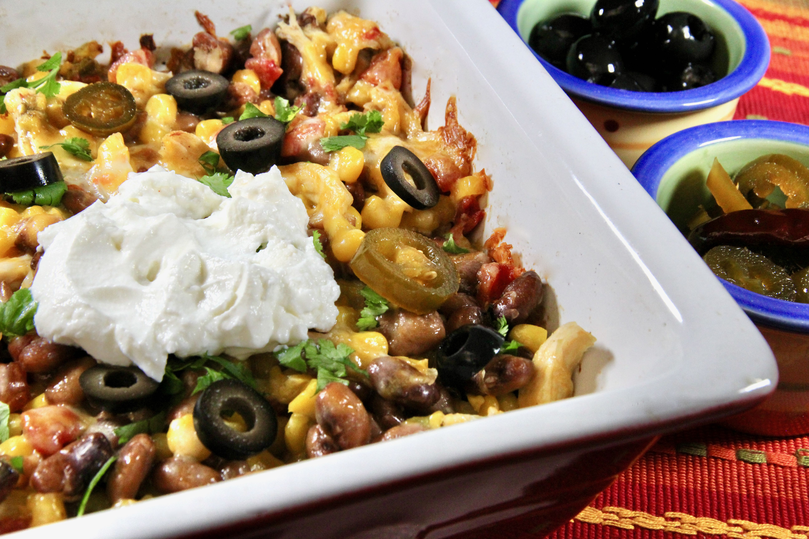

Pinto Bean and Chicken Casserole

Ingredients
- cooking spray
- 2 (15.5 ounce) cans pinto beans, drained
- 1.5 cups chopped, cooked chicken
- 1 (11 ounce) can Mexican-style corn (such as Green Giant®), drained
- 1 (10 ounce) can diced tomatoes and green chiles (such as RO*TEL®), undrained
- 1 (8 ounce) can tomato sauce
- 1 teaspoon dried minced onion
- 1 teaspoon ground cumin
- 1/2 teaspoon garlic powder
- 1/2 teaspoon salt
- ground black pepper to taste
- 1.5 cups corn chips (such as Fritos®)
- 2 cups shredded Colby-Jack cheese
Steps
- Preheat the oven to 375 degrees F (190 degrees C). Spray a large casserole dish with cooking spray.
- Combine pinto beans, chicken, corn, diced tomatoes and green chiles, tomato sauce, onion, cumin, garlic powder, salt,
and pepper in a large bowl.
- Spread corn chips on the bottom of the prepared casserole dish and evenly distribute the bean mixture over top. Sprinkle
with Colby-Jack cheese.
- Bake in the preheated oven until cheese has melted and casserole is heated through, about 25 minutes. Serve immediately.
Nutrition facts
Per Serving: 480 calories; protein 29.7g; carbohydrates 44.4g; fat 22g; cholesterol 69.8mg; sodium 1626.1mg.
Back to the home page
Source
Pinto Bean and Chicken Casserole - allrecipes.com